第六章 数据的收集与整理（高效培优单元测试·强化卷）
（考试时间：120分钟 试卷满分：120分）
一、选择题（本大题共10小题，每小题3分，共30分）
1．数据划分成定量数据和定性数据两种，以下几种数据中，属于定性数据的是（ ）
A．性别 B．年龄
C．平均成绩 D．体重
2．下列调查最适合采用全面调查（普查）的是（ ）
A．调查2025年“九三阅兵”活动对全国青少年爱国主义教育的效果
B．调查某一批草莓的甜度情况
C．调查一批电池的使用寿命
D．调查全班同学眼睛近视情况
3．下列调查的样本具有代表性的是（ ）
A．为了调查我国初中学生的平均体重，小明建议在本校初中三年级抽一个班调查
B．在福州少儿图书馆随机抽取全年中的20天调查借阅情况，考察福州读者的借阅图书情况
C．为了估计鼓山一年的登高总人数，李元芳利用五一假期做了3天的登高人数统计
D．为了了解某校中学生有多少人已经患上近视眼，从每个班随机抽取5名学生做调查
4．高山测绘大队想要用一张统计图来表示测量过的几座高山的高度情况，最好用（ ）．
A．扇形统计图 B．折线统计图 C．条形统计图 D．以上都可以
5．生物工作者为了估计一片山林中喜鹊的数量，进行了如下试验：先捕捉50只喜鹊，给它们做上标记后放回山林，一段时间后，再从中随机捕捉300只，发现其中有标记的喜鹊有5只请你帮助工作人员，估计这片山林中喜鹊的数量为（ ）只．
A．300 B．500 C．3000 D．1500
6．某中学八年级五班同学纷纷捐出自己的零花钱，为建档立卡的贫困学生献爱心，该班第2小组8名同学捐款数额如下（单位：元）：12，5，10，5，20，10，10，8．这组捐款数据中，“10”出现的频率是（ ）
A． B．
B．
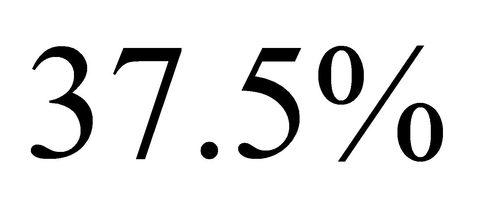
C．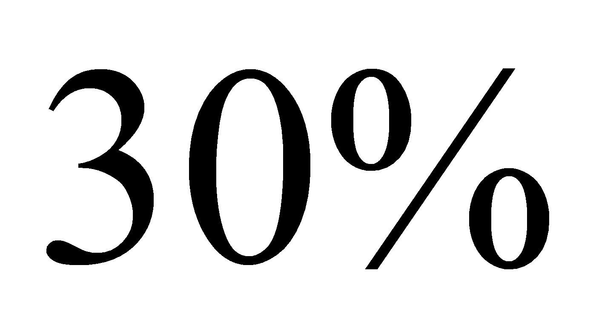
D．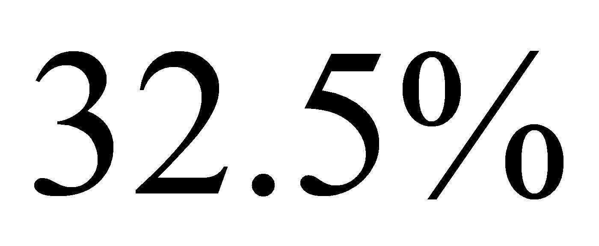
7．今年我市有近7万名考生参加中考，为了解这些考生的数学成绩，从中抽取1000名考生的数学成绩进行统计分析，以下说法正确的是（ ）
A．这1000名考生是总体的一个样本 B．近7万名考生是总体
C．每位考生的数学成绩是个体 D．1000名考生是样本容量
8．甲、乙两所学校男女生比例情况如图，若甲学校有1000人，乙学校有1250人，则（ ）

A．甲校与乙校的女生一样多 B．甲校的女生比乙校的女生多
C．甲校的女生比乙校的女生少 D．甲校与乙校男生共是1350人
9．为了检查近期期末复习的教学效果，数学老师把某班的期末测评成绩进行了统计，得到如图所示的频数分布直方图（每组含前一个边界值，不含后一个边界值）．下列说法错误的是（ ）
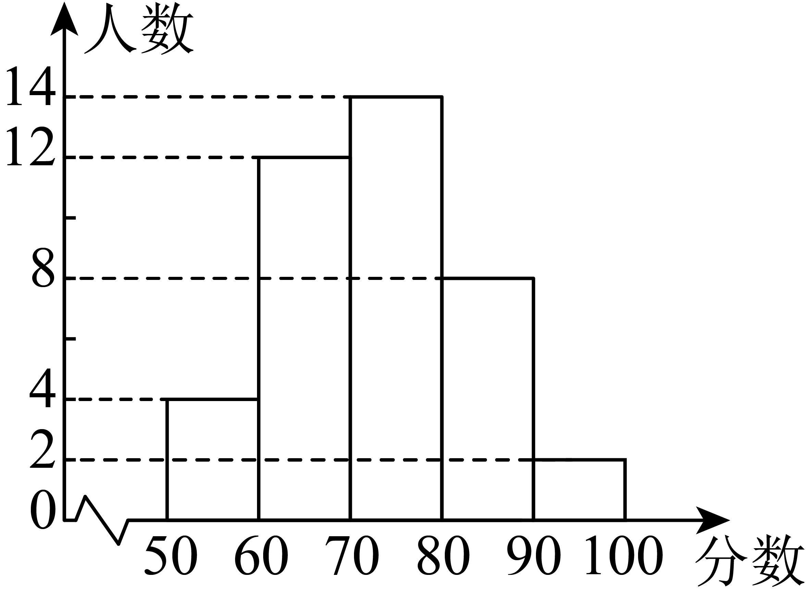
A．全班一共有40人
B．数学老师按成绩范围分成了5组，组距是10
C．不及格（
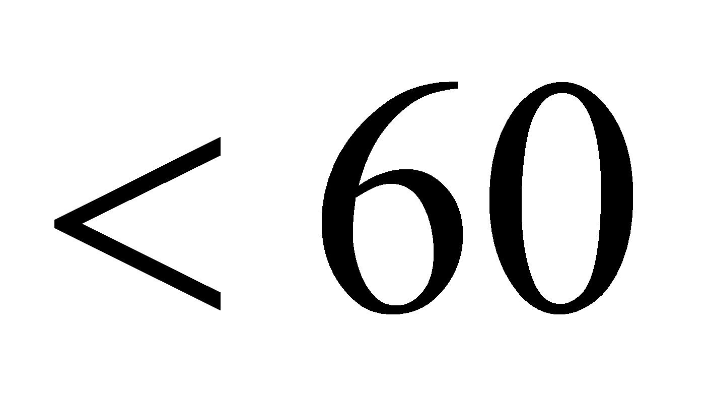
分）的人数有2人D．图中从左往右第三组的人数最多
10．为了解七年级女生的身高情况，数学活动小组随机调查了七年级 名女生的身高
名女生的身高 （单位：
（单位： ），收集到的数据如下：
），收集到的数据如下：
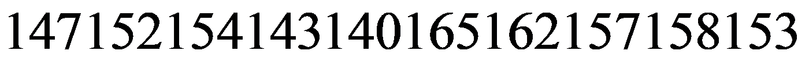
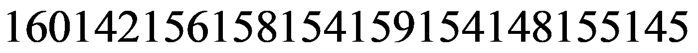
小雷同学选择通过频数分布直方图分析各个身高段女生的人数．下面是画频数分布直方图的步骤：（顺序打乱）
①找到这组数据的最大值、最小值分别为
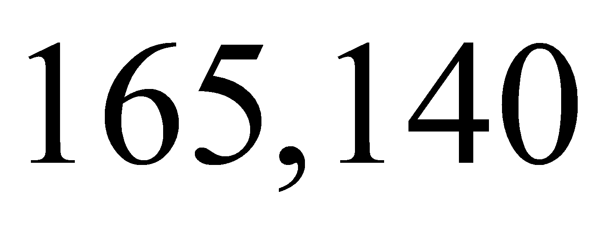
，并计算出它们的差为 ；
；②用横轴表示身高，纵轴表示人数，画出频数分布直方图；
③将所有数据分为 组：A．
组：A． ，B．
，B．
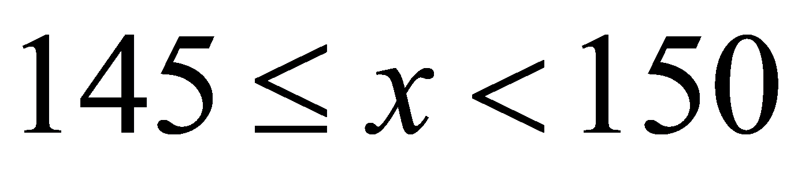
，C．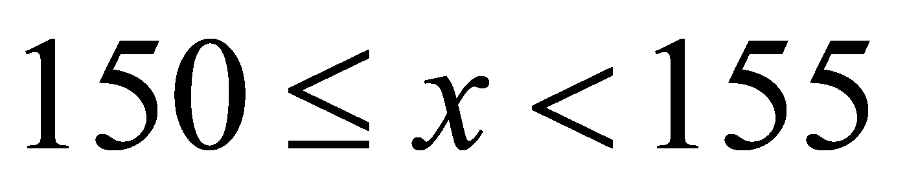
，D．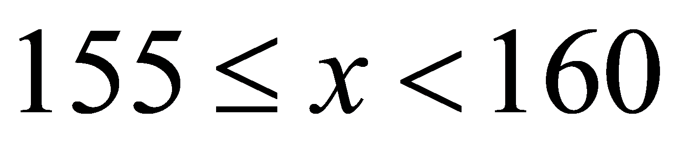
，E．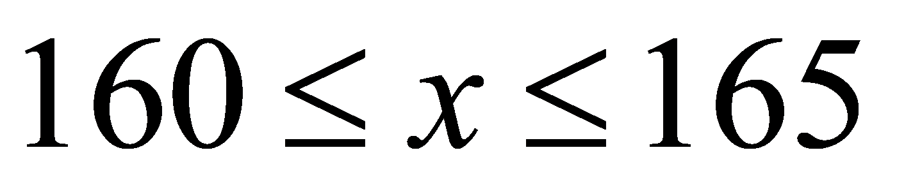
；④对落在各组内的数据进行累计，得到各组内数据的个数，列出频数分布表．
画频数分布直方图的步骤排序正确的是（ ）
A．③②④① B．①④③② C．③①④② D．①③④②
二、填空题（本大题共6小题，每小题3分，共18分）
11．你们学校所有教师下班采用的交通方式为 数据．（填“定量”或“定性”）
12．2023年5月30日，神舟十六号载人飞船发射圆满成功．调查“神舟十六号”载人飞船零件的质量，适合采用 调查．（填“全面”或“抽样”）
13．为估计鱼塘里有多少鱼，先从鱼塘中捕捞100条鱼做上标记，然后放回鱼塘，经过一段时间，待有标记的鱼完全混于鱼塘后，再捕捞200条鱼，发现其中10条有标记，那么估计鱼塘中大约有鱼 条．
14．空气质量指数（
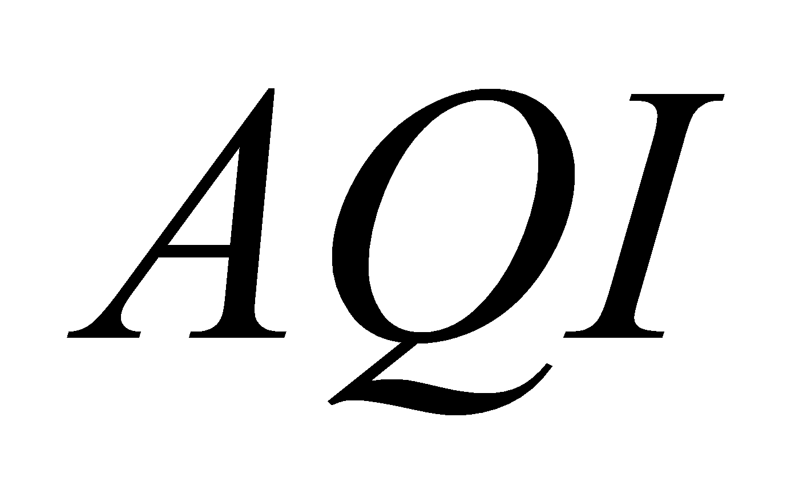
）的值取整数时，在 范围内空气质量类别为优，在
范围内空气质量类别为优，在 范围内空气质量类别为良，在
范围内空气质量类别为良，在 范围内空气质量类别为轻度污染． 按照某区最近一段时间的画出的频数分布直方图如图所示．若在过去的一段时间内，空气质量类别为优和良的天数共124天，则这段时间大约为 天．
范围内空气质量类别为轻度污染． 按照某区最近一段时间的画出的频数分布直方图如图所示．若在过去的一段时间内，空气质量类别为优和良的天数共124天，则这段时间大约为 天．
15．空气质量状况已引起全社会的广泛关注，某市统计了去年每月空气质量达到良好以上的天数，整理后制成如图1所示的折线统计图和如图2所示的扇形统计图．

根据以上信息解答下列问题：该市去年空气质量连续提升的月份范围是 ；扇形统计图中扇形A的圆心角的度数为 ．
16．如图是某公司去年第一季度资金投放总额与1∼4月份利润统计图，若知1∼4月份利润的总和为 万元，根据图中的信息判断，得出下列结论：①公司去年1∼3月份投资总额最高的是三月份；②公司去年第一季度中3月份的利润率最高；③公司去年4月份的资金投放总额比1月份高；④公司去年4月份利润为
万元，根据图中的信息判断，得出下列结论：①公司去年1∼3月份投资总额最高的是三月份；②公司去年第一季度中3月份的利润率最高；③公司去年4月份的资金投放总额比1月份高；④公司去年4月份利润为 万元．其中正确的结论是 ．
万元．其中正确的结论是 ．
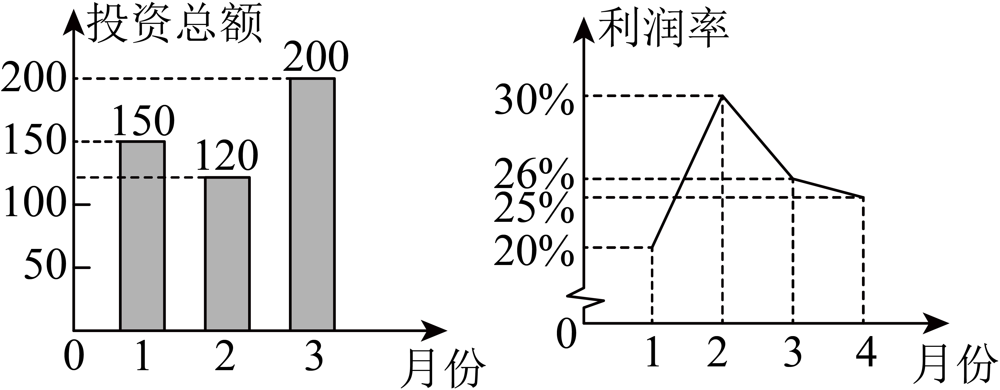
三、解答题（第17，18，19，20题，每题6分；第21，22，23题，每题8分；第24，25题，每题12分；共9小题，共72分）
17．下列调查采用哪种调查方式更合适？
(1)调查一片试验田里某种大麦的穗长情况；
(2)调查一个班级中的学生对建立班级生物角的看法；
(3)调查人们保护海洋的意识．
18．下列调查问题设计得合理吗？为什么？
(1)你每天睡眠充足吗？
(2)你们学校的环境噪声是否在
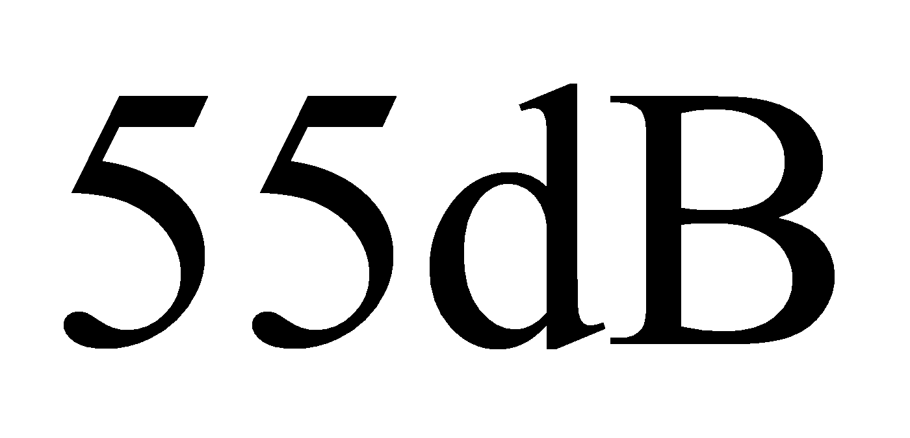
以下？(3)大多数同学认为学校操场应该铺设塑胶跑道，你同意吗？
19．解答下列问题：
(1)某报纸上刊登了一则新闻：“某种品牌的节能灯的合格率为
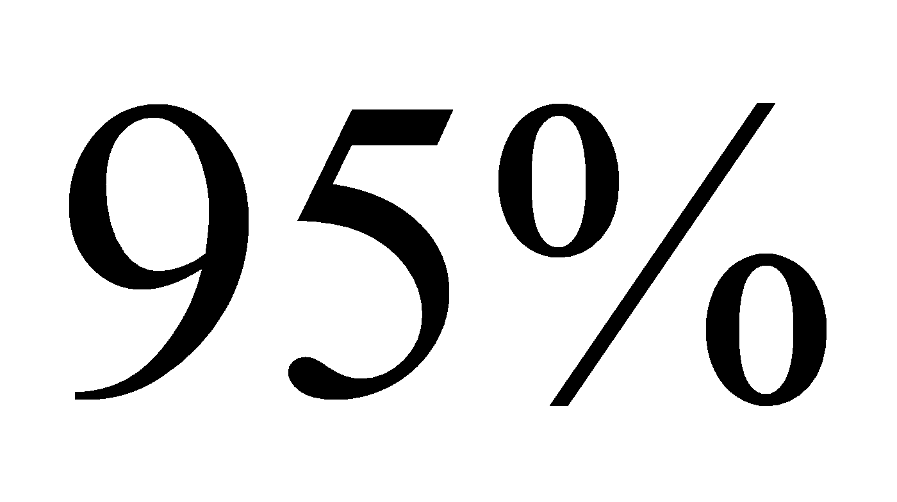
．”这则新闻______________（填“能”或“不能”）说明市面上所有这种品牌的节能灯恰有 不合格，这则新闻应来源于______________（填“普查”或“抽样调查”）．
不合格，这则新闻应来源于______________（填“普查”或“抽样调查”）．(2)下表是随机抽样调查的两种品牌的同类产品的情况，有人由此认为“A品牌的不合格率比B品牌低，更让人放心．”你同意这种说法吗？为什么？
品牌 | A品牌 | B品牌 |
被检测数 | 200 | 10 |
不合格数 | 15 | 1 |
20．某校有4000名学生，从不同年级不同班级中随机抽取了400名学生进行调查，这400名学生早晨的起床方式的统计表如下：
起床方式 | 别人叫醒 | 闹钟 | 自己醒来 | 其他 |
人数 | 172 | 88 | 64 | 76 |
(1)请指出该调查中的总体、个体、样本．
(2)试估计全校学生中早晨自己醒来的人数．
21．在东京奥运会田径男子百米半决赛中，中国选手苏炳添以
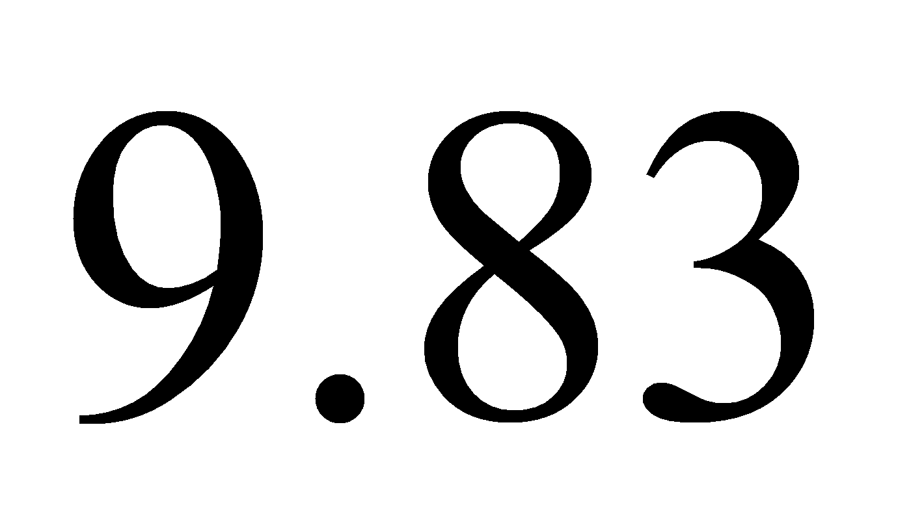
秒的成绩晋级决赛，成为首位闯入奥运会男子百米决赛的中国人，某校为了解学生百米跑成绩，在各个年级抽取部分同学开展百米跑测试，成绩分为A，B，C，D四个等级，并绘制成以下两幅不完整的统计图．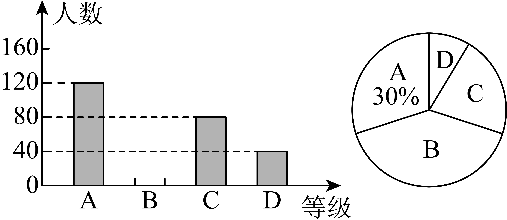
(1)此次测试的总人数为_______人，其中成绩为B等级的学生有_______人；
(2)C等级在扇形统计图中对应的圆心角的度数为_______度；
(3)若成绩为A等级或B等级为合格，已知该校共有1400人，试估计全校合格的学生人数．
22．列表、画图、统计
为了了解中学生的身体发育情况，对某一中学同年龄的50名男学生的身高进行了测量，结果如下（单位：cm）：
175 168 170 176 167 181 162 173 171 177
179 172 165 157 172 173 166 177 169 181
160 163 166 177 175 174 173 174 171 171
158 170 165 175 165 174 169 163 166 166
174 172 166 172 167 172 175 161 173 167
频数分布表
身高分组 | 频数划记 | 频数 |
| ||
合计 | 50 |

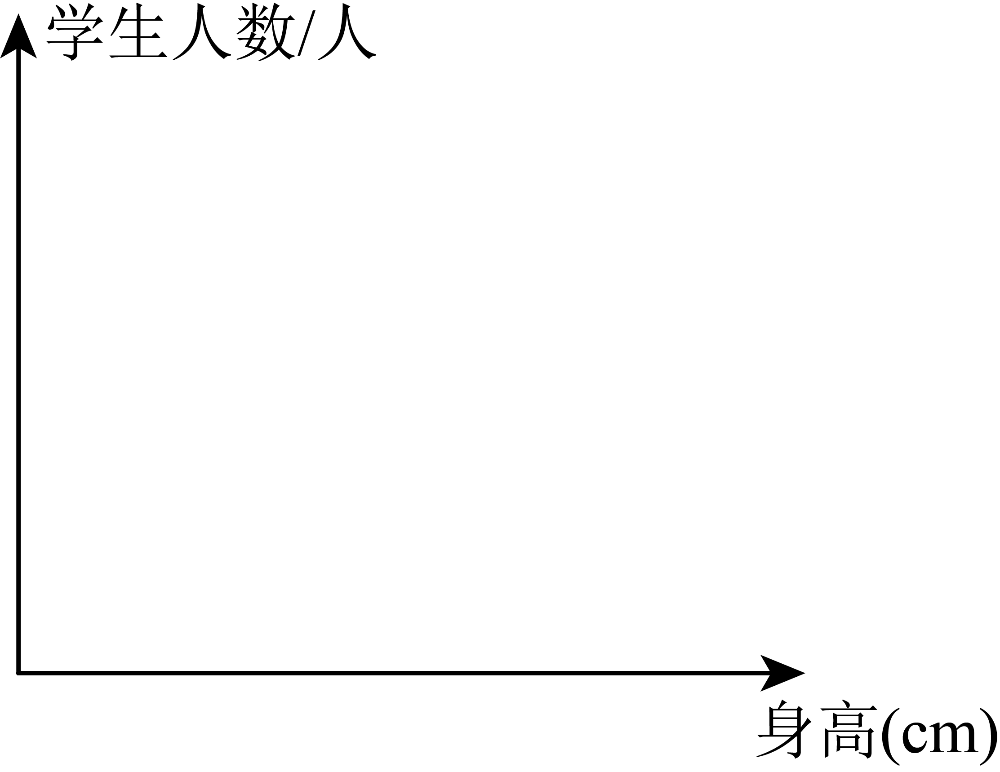
(1)按组距为4，将题中所给的样本整理成频数分布表，画出频数分布直方图．
(2)身高在哪个范围内人数最多？身高超过
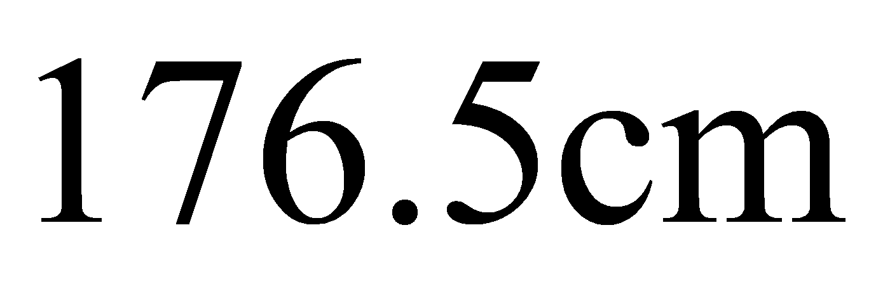
的学生占同年龄的50名男学生的百分之几？身高分组 | 频数划记 | 频数 |
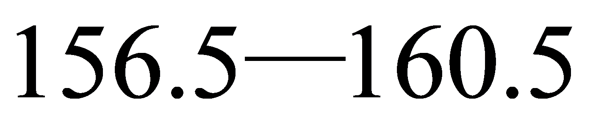 |
| 3 |
| 4 | |
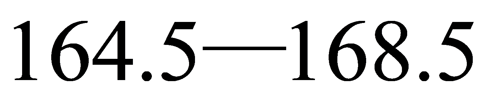 | 正正丅 | 12 |
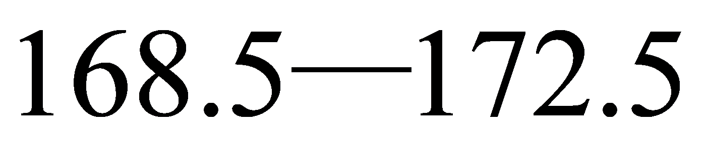 | 正正丅 | 12 |
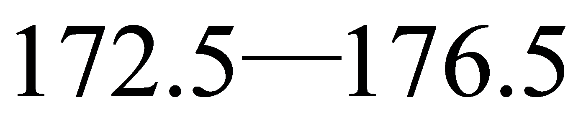 | 正正 | 13 |
| 4 | |
| 丅 | 2 |
合计 | 50 | 50 |


23．2015年是中国抗日战争胜利70周年暨世界反法西斯战争胜利70周年．某校为纪念中国抗日战争胜利70周年，对全校学生进行了“抗日战争知多少”知识测验．然后随机抽取了部分学生的成绩，整理并制作如图所示的图表．
分数段 | 频数 | 频率 |
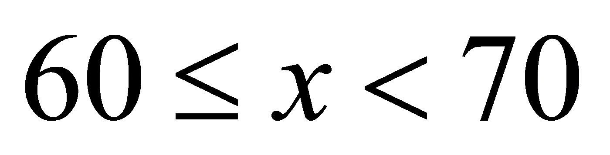 | 30 | 0.1 |
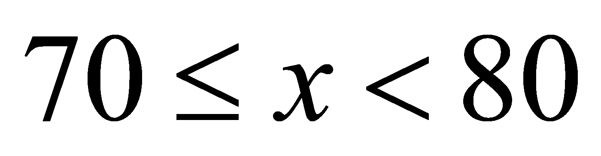 | 90 | m |
| n | 0.4 |
| 60 | 0.2 |


请你根据图表中提供的信息，解答下列问题：
(1)在频数分布表中： _____，
_____， _____；
_____；
(2)补全频数分布直方图；
(3)如果某校有2000名学生，比赛成绩80分以上为优秀，那么你估计此次测验成绩的优秀人数大约是_____人．
24．为增强学生消防意识，某校举行了一次全校2400名学生参加消防知识竞赛．从中随机抽取 名学生的竞赛成绩进行了分析，把成绩（满分100分，所有竞赛成绩均不低于60分）分成四个等级（
名学生的竞赛成绩进行了分析，把成绩（满分100分，所有竞赛成绩均不低于60分）分成四个等级（
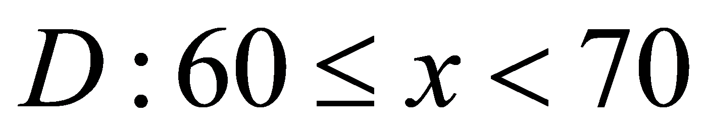
；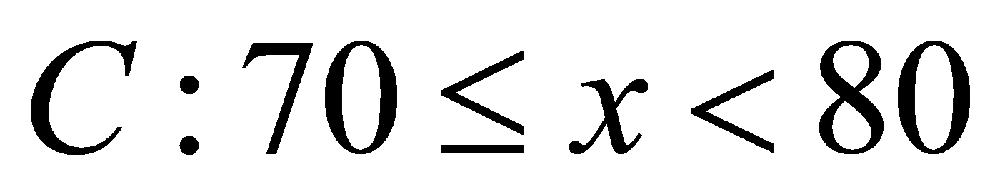
； ；
； ），并根据分析结果绘制了不完整的频数分布直方图和扇形统计图．
），并根据分析结果绘制了不完整的频数分布直方图和扇形统计图．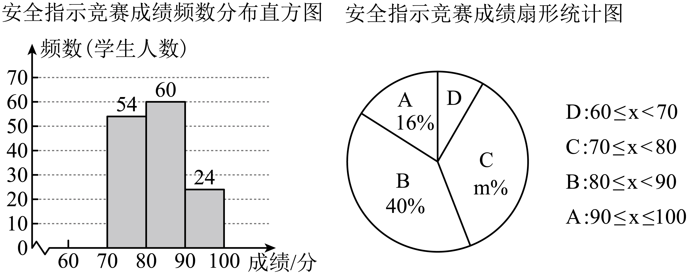
请根据以上信息，解答下列问题：
(1)填空： ， ；
(2)请补全频数分布直方图；
(3)扇形统计图中 等级所在扇形的圆心角度数为 度；
等级所在扇形的圆心角度数为 度；
(4)若把 等级定为“优秀”等级，请你估计该校参加竞赛的2400名学生中达到“优秀”等级的学生人数．
等级定为“优秀”等级，请你估计该校参加竞赛的2400名学生中达到“优秀”等级的学生人数．
25．尊老敬老是中华民族的传统美德，爱老是全社会的共同责任．为了解某地区老年人的生活状况，随机抽取部分65岁及以上的老年人进行了一次问卷调查．
调查问卷 以下问题均为单选题，请根据实际情况选择（例：65~70岁表示大于等于65岁同时小于70岁）． 1．您的年龄范围（ ） A．65~70岁 B．70~75岁 C．75~80岁 D．80岁及以上 2．您的养老需求（ ） A．医疗服务 B．社交娱乐 C．健身活动 D．餐饮服务 E．其他 3．您的健康状况（ ） A．良好 B．一般 C．较差 |
将调查结果绘制成如下统计图表请阅读相关信息，解答下列问题：
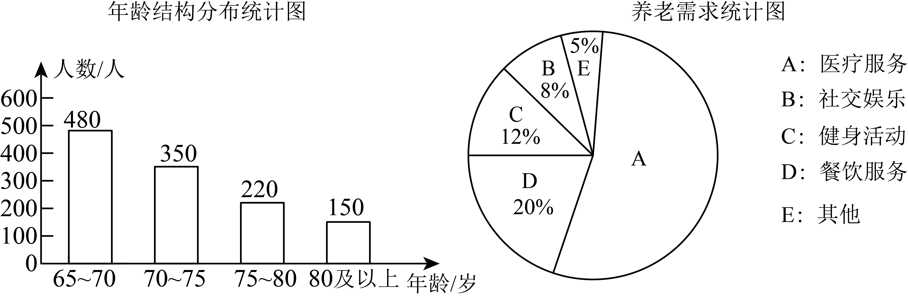
健康状况统计表
65～70岁 | 70～75岁 | 75～80岁 | 80岁及以上 | |
良好 | 65% | 58% | 50% | 40% |
一般 | 25% | 30% | 359% | 40% |
较差 | 10% | 12% | 15% | 20% |
(1)参与本次调查的老年人共有___________人，有“医疗服务”需求的老年人有___________人；
(2)已知该地区65岁及以上的老年人人口总数约为6万人，估计该地区健康状况较差的老年人人口数；
(3)根据以上信息，针对该地区老年人的生活状况，你能提出哪些合理化的建议？（写出一条即可）